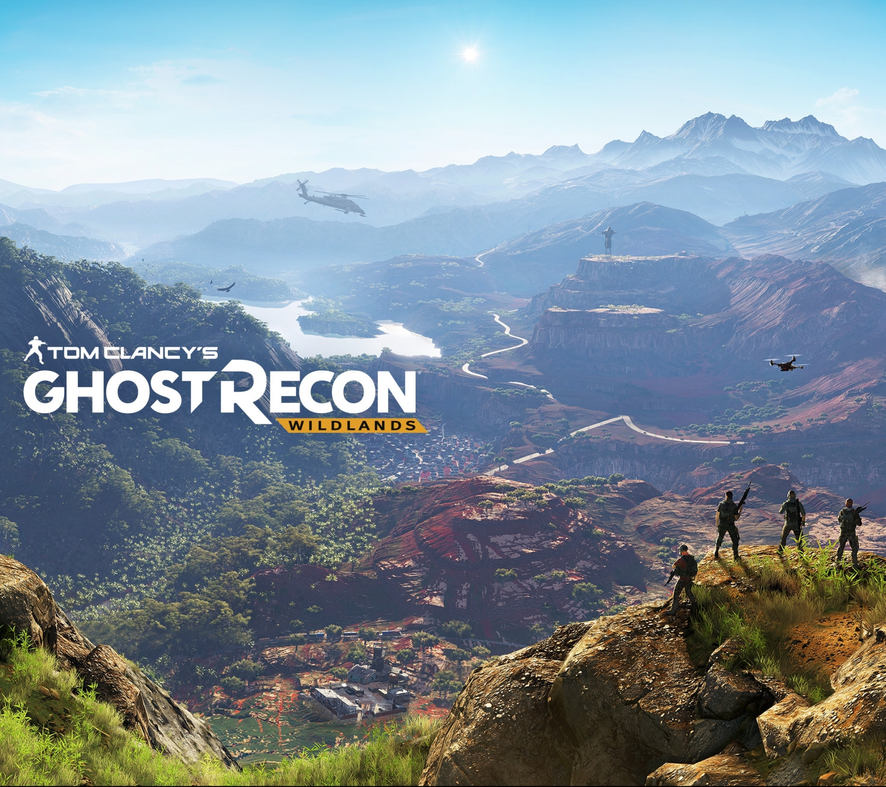
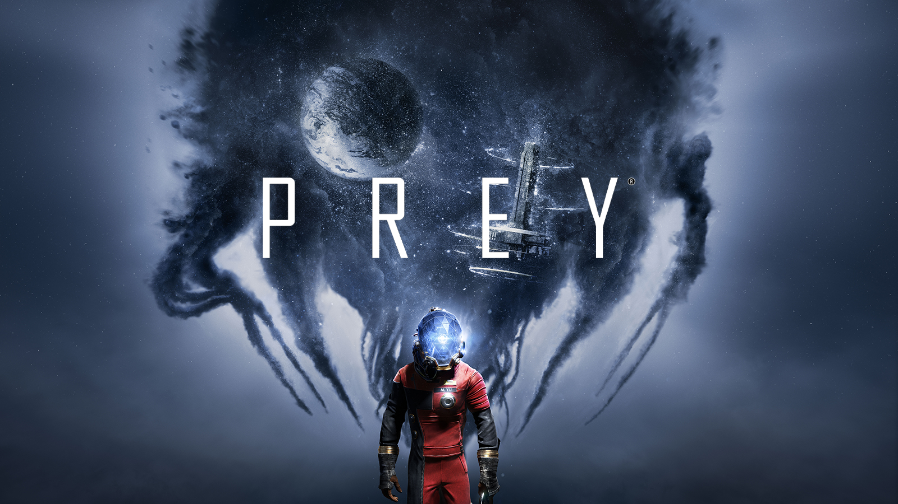

Ghost Recon: Wildlands
Take a big open world, stuff it with 100 Far Cry-type outpost missions, and jump in with some co-op partners. Ghost Recon: Wildlands takes place in a Bolivian landmass where four players comprise a military taskforce sent to disrupt a drug cartel and the government it’s aligned with. While players may have a specific missions—whether it’s to steal some intel or kidnap an informant—how they choose to tackle it is up to them. Guns blazing? Stealth? Or, as often happens, failed stealth that leads to guns blazing?
The open world—the first in Ghost Recon’s ten-game history—promises diverse environments like mountains, forests, and deserts, explorable by ground vehicles, helicopters, and parachutes. The setting is close to modern day, so weapons and gear aren’t as futuristic as they have been in earlier Recon games.
We gave Wildlands a go during the closed beta, and had a pretty good time. It was mostly antics, though.
During this Open Beta, you will also be able to discover the Ghost Recon Network, the ultimate platform for all Ghost Recon fans. Get ready to join the community and find the right people to play with in order to build your own team!
Already available to all, download now the Ghost Recon Wildlands HQ app to prepare yourself for upcoming deployment and complete your game experience.
Prey
New Prey has nothing to do with the old Prey, or Prey 2, which was cancelled back in 2014. Now in the hands of Arkane’s Austin studio, Prey is only familiar in name. Set in an alternate history where President Kennedy was never assassinated, the Soviets and the States continued their rivalry, until one took control of the Kletka Program, a space installation meant to control an alien threat.
You play as Morgan Yu (with a gender of your choice), who happens to be on board when the alien threat gets particularly threatening. From there, it’s a matter of survival and getting to the bottom of what went wrong. Expect plenty of shooting and exploration, and most interestingly, shape-shifting. You and the alien threat can take on nearly any form. An inconspicuous mug or trash bin might be an alien in wait, or if they’re hunting you down, try the mug life for yourself.
Spaceflights cannot be stopped. This is not the work of any one man or even a group of men. It is a historical process which mankind is carrying out in accordance with the natural laws of human development.
Red Dead Redemption 2
Rockstar has done it again: announced a highly-anticipated game without mentioning whether or not it will come to PC. The original Red Dead Redemption never came to PC, but this feels more like a repeat of GTA V than that.
 To go places and do things that have never been done before – that’s what living is all about.
To go places and do things that have never been done before – that’s what living is all about.
Assuming we’re right, we seem to be looking at a Magnificent Seven approach to the western—or at least, there are seven riders conspicuously featured in the debut teaser.
Rockstar is also touting multiplayer, which will presumably look something like GTA Online, but with people running you over with trains instead of cars.